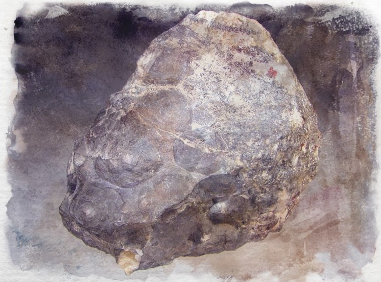

Arsenic
Formed by heat and chemical changes deep underground, it is a very rare grey mineral that yellows when powdered. It can be smelted into bronze to make the metal harder and it is a discreet but deadly poison.